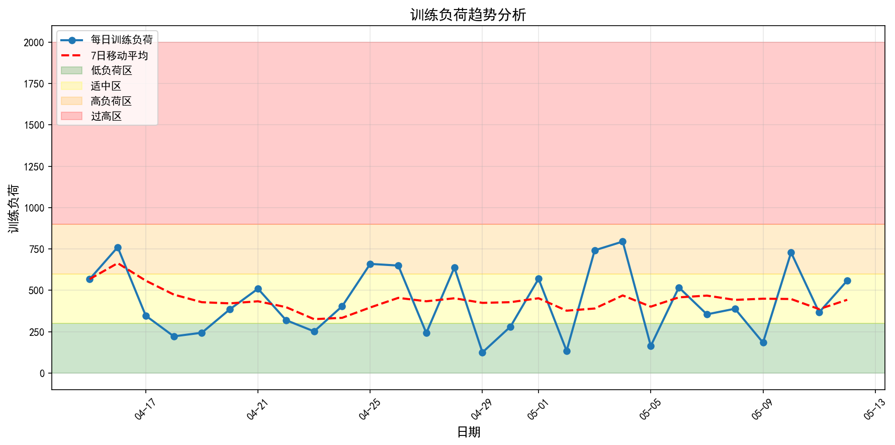
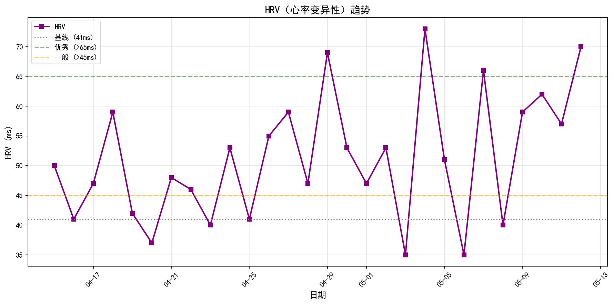
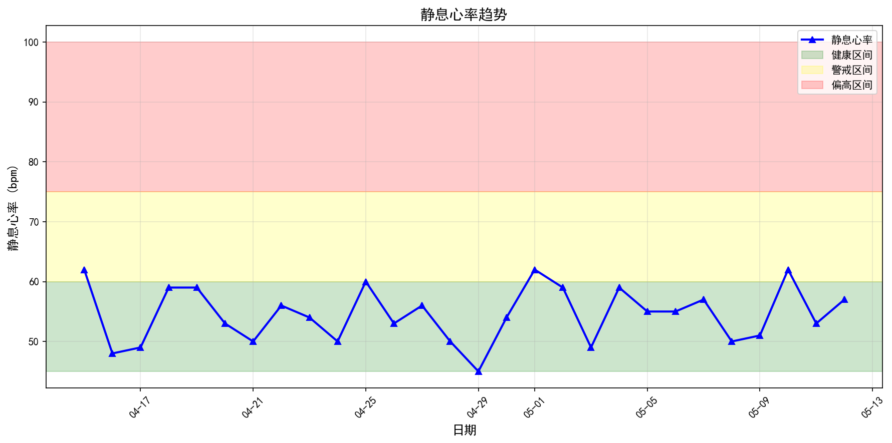
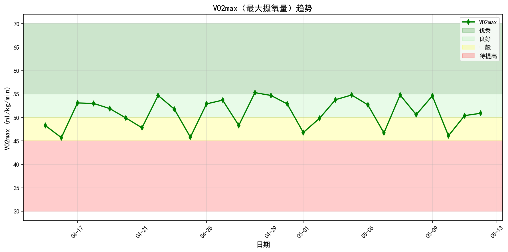
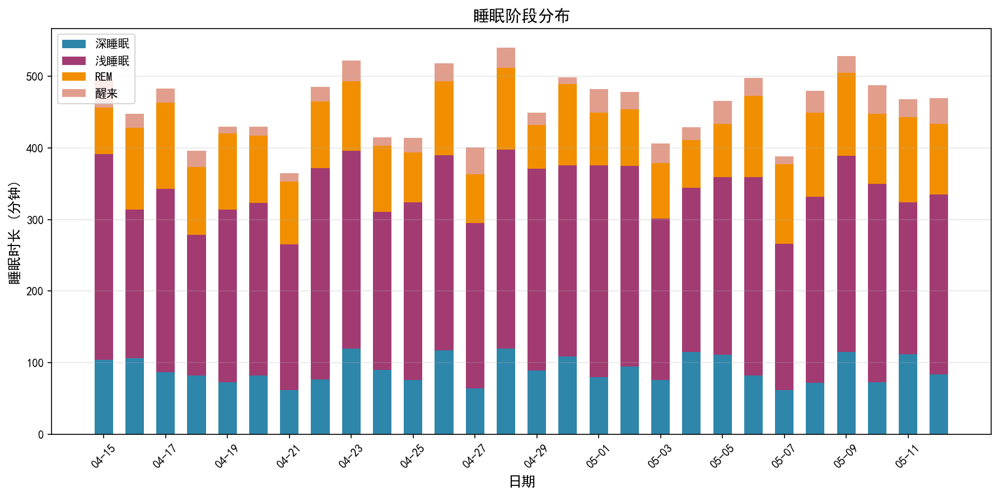
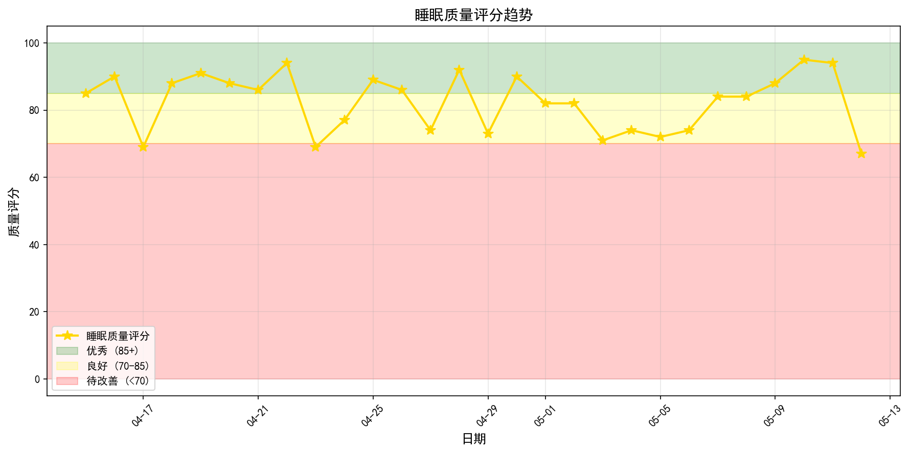
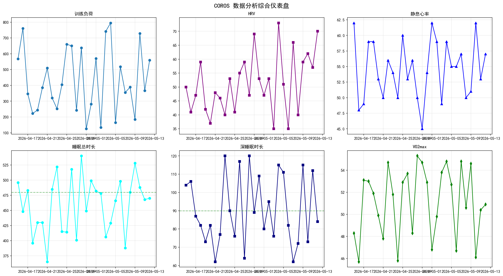

生成时间：2026年05月13日 16:11
| 指标 | 数值 | 状态 |
|---|---|---|
| 急性负荷 (ATI) | 291.1 | 训练偏高 |
| 慢性负荷 (CTI) | 460.3 | |
| 负荷比值 (ATI/CTI) | 1.43 | 注意恢复，避免过度训练 |
风险等级：中
风险因素：训练负荷比值偏高, HRV下降
建议：建议降低训练强度，增加休息日，监控相关指标
综合评级：良好
| 指标 | 趋势方向 | 近期平均值 |
|---|---|---|
| training_load | 稳定 | 498.7 |
| training_load_ratio | 稳定 | N/A |
| distance | 稳定 | 72.2 |
| duration | 稳定 | N/A |






